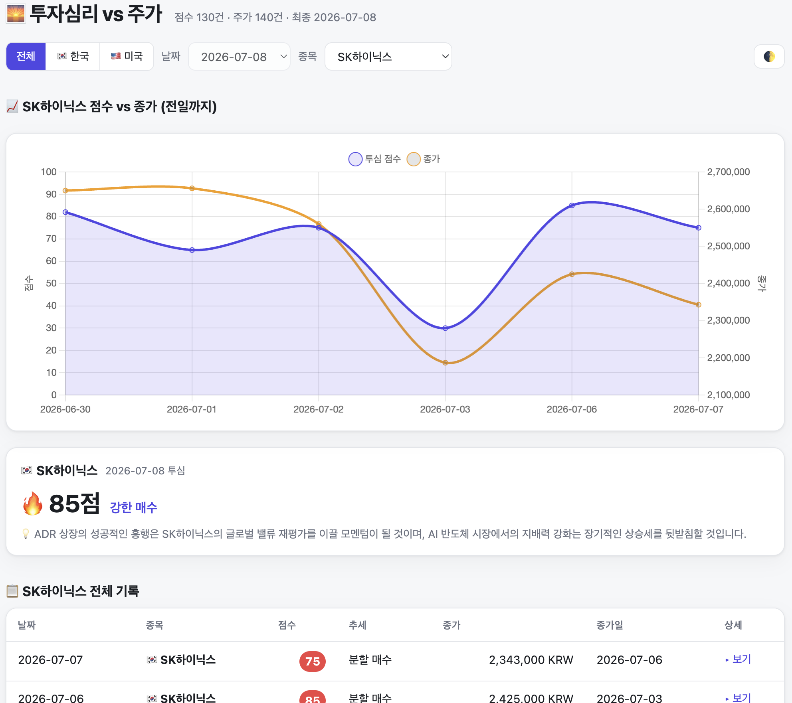

문제를 기능보다 먼저 정의합니다
현업이 실제로 멈추는 지점과 필요한 최소 업무를 먼저 확인합니다. 완벽한 시스템을 기다리기보다, 영향도와 우선순위에 맞춰 작동 가능한 경로를 만듭니다.
현업의 병목을 찾아, 데이터·자동화·AI로 바로 쓰이는 도구를 만드는 엔지니어
결제·커머스·항공·메시징 등 5개 도메인을 거치며 대용량 처리와 외부 연동 시스템을 설계·운영해 왔고, 그때마다 새로운 비즈니스 규칙과 시스템 구조를 빠르게 학습해 적응해 왔습니다. 최근에는 장애 상황에서 업무 연속성을 확보하는 긴급 운영 도구와, 데이터 수집부터 AI 분석·알림까지 연결한 자동화 서비스를 직접 구축하며 문제 정의부터 배포·운영까지의 실행력을 확장하고 있습니다.
현업이 실제로 멈추는 지점과 필요한 최소 업무를 먼저 확인합니다. 완벽한 시스템을 기다리기보다, 영향도와 우선순위에 맞춰 작동 가능한 경로를 만듭니다.
외부 API, DB, 배치, 알림 채널을 한 흐름으로 설계합니다. 사람이 반복 조회·정리하던 정보를 현업이 즉시 활용할 수 있는 화면과 알림으로 바꿉니다.
예외 처리, 재시도, 속도 제한, 로그, 데이터 검증을 기본으로 둡니다. 빠른 프로토타입을 실제 운영의 출발점으로 연결하는 데 집중합니다.
운영 서버 하드웨어 장애로 특정 DB 접속이 끊기자, 여러 DB를 동기 참조하던 레거시 백오피스 전체가 중단된 상황을 대응했습니다.
한국·미국 주요 20개 종목의 뉴스와 가격을 수집하고, LLM 분석 결과를 대시보드와 텔레그램 리포트로 제공하는 자동화 파이프라인입니다.
연구개발팀 과장
개발팀 팀장 · 백엔드 리드
서버 개발 및 운영
백엔드 리드
I&S 개발팀 · 결제 시스템 개발
서버 개발 및 운영
서버 개발 및 운영
Java/Spring Boot와 Node.js/TypeScript를 기반으로 REST API, 외부 SaaS·결제·메시징 연동, 비동기 처리 시스템을 설계합니다.
DB·배치·워크플로·알림을 연결하고, EDA와 Tableau 기반 시각화로 현업이 바로 확인할 수 있는 형태로 가공합니다. LLM Structured Output을 활용해 사람이 쓰는 데이터 흐름으로 바꿉니다.
Timeout, Retry, Rate Limit, Queue, 모니터링과 장애 격리를 고려해 빠른 도구도 운영 가능한 시스템으로 연결합니다.
AWS 기반 인프라, Docker 이미지 빌드·배포, CI/CD 파이프라인을 구성하고 서비스 운영 환경을 함께 설계합니다.
5개 회사에서 맡았던 역할과 기술 스택, 담당 업무를 회사별로 정리했습니다.
국내 10개 문자 중계 사업소 중 한 곳으로, 일 평균 250~300만 메시지를 이동통신사 및 상위라인에 유통합니다.
담당직무연구개발팀 과장
기술스택 담당 업무건설 일용직 구인구직 플랫폼으로, 기존 인력사무소를 방문해야 하는 어려움을 해소하고 열악한 근무 환경과 임금체불 등 건설 근로의 사회적 문제를 해결하고자 하는 서비스입니다.
담당직무개발팀 팀장 (Flutter 주니어 1명, 웹 개발자 주니어 1명 리딩)
기술스택 담당 업무기존 현금과 수기로 이루어지던 동대문 의류 도매시장의 디지털 전환을 위해 동대문 APM 그룹의 자회사로 설립되어, 자체 전자 상품권을 발행·결제·정산하는 서비스를 제공했습니다.
담당직무백엔드 리드 (백엔드 주니어 개발자 2명)
기술스택 담당 업무항공 이용의 불편함을 해결하고 낮은 금액으로 프리미엄급 서비스를 제공하자는 사명의 신규 LCC 항공사입니다.
담당직무I&S 개발팀 · 결제 시스템 개발
기술스택 담당 업무엑심베이는 국내/해외 통합 결제 서비스를 제공하는 글로벌 PG사로 온라인 해외 카드결제 및 간편결제 API를 제공합니다.
담당직무서버 개발 및 운영
기술스택 담당 업무직접 기획·개발·운영하는 사이드 프로젝트를 소개합니다. 문제 정의, 핵심 기능, 운영 안정성을 위한 기술적 고려사항 위주로 정리했습니다.
외부 데이터 수집 → AI 분석 → 저장 → 대시보드 → 알림을 하나의 운영 가능한 워크플로로 연결한 개인 프로젝트입니다. 한국·미국 주요 20개 종목의 뉴스와 가격 데이터를 자동 수집하고, Gemini로 투자심리를 정형화합니다.

AI 응답을 score(0~100 투자심리 점수) · trend(5단계 매매 트렌드) · summary(핵심 팩트 3개) · insight(한 줄 포인트)로 정형화해, 대시보드와 알림이 항상 같은 스키마를 신뢰하고 소비할 수 있도록 설계했습니다.